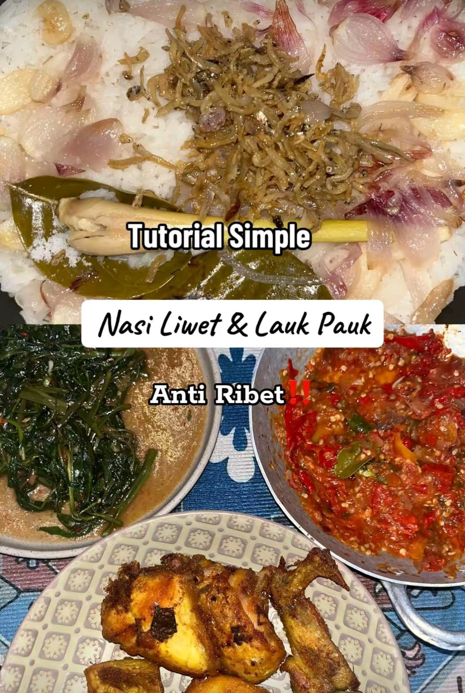

Nasi Liwet
Nasi Liwet is a traditional Indonesian rice dish that comes from Solo, Central Java. It is famous for its savory and aromatic rice cooked with coconut milk, lemongrass, bay leaves, and other spices. Nasi Liwet is commonly served with side dishes such as fried chicken, sambal, salted fish, vegetables, and crackers. This dish is popular because of its rich flavor and simple homemade cooking style.
Ingredients
| • 3 cups of rice | • 400 ml coconut milk |
| • 2 stalks of lemongrass | • 4 bay leaves |
| • 5 cloves of garlic | • 6 shallots |
| • Salt to taste | • Fried anchovies |
| • Fried chicken | • Sambal chili sauce |
| • Stir-fried water spinach |
Cooking Tutorial
First, wash the rice until clean. Then place the rice into a rice cooker or pot and add coconut milk, crushed garlic, sliced shallots, lemongrass, bay leaves, and salt. Cook the rice until fully done and fragrant.
While waiting, fry the anchovies until crispy and prepare the side dishes such as fried chicken, sambal, and vegetables. After the rice is cooked, serve it warm with all the side dishes on one plate.
Nasi Liwet is best enjoyed together with family or friends because it creates a warm and traditional dining experience.
Back